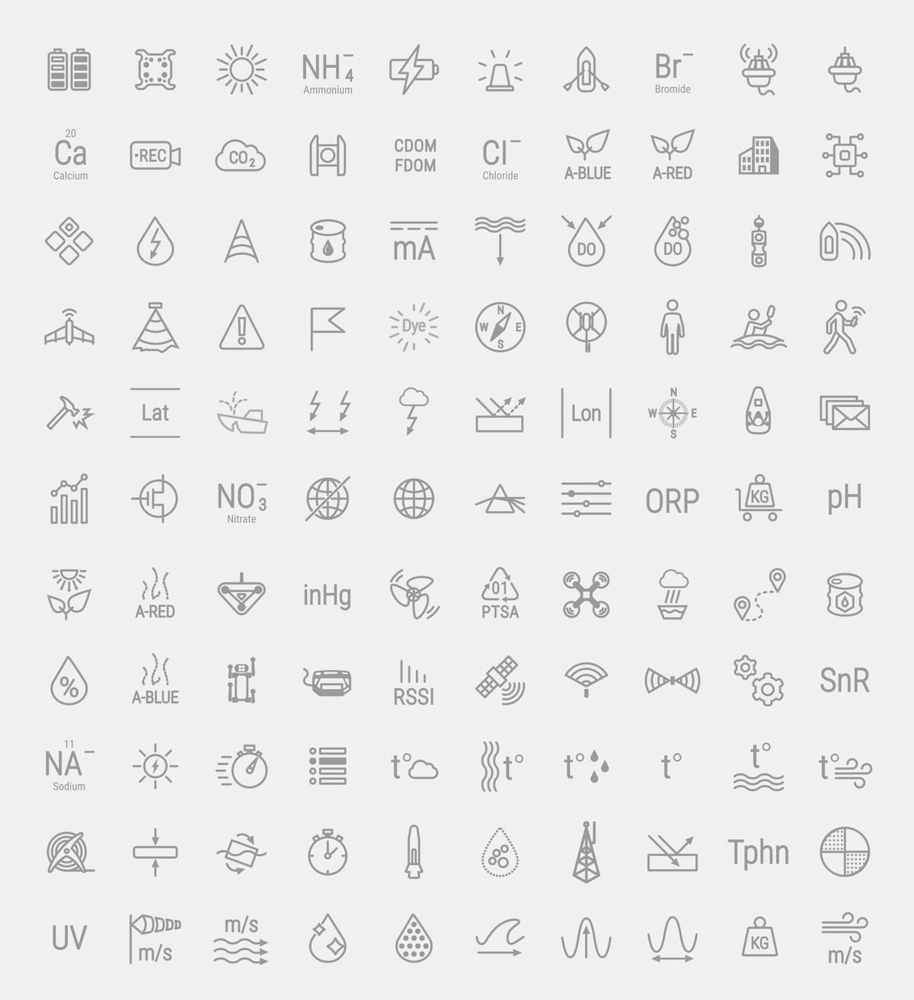
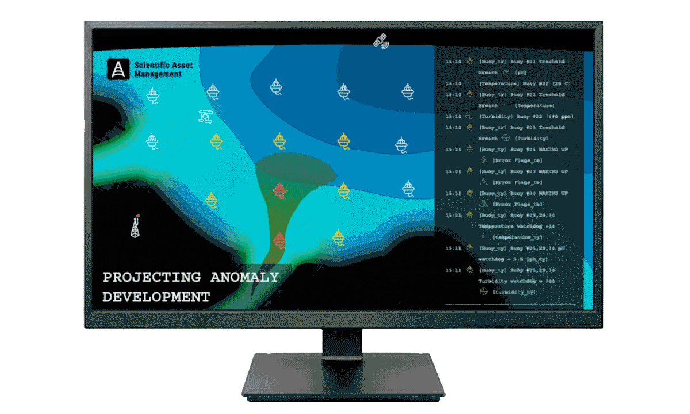

← All projects

Scientific Asset Manager (SAM)
This unique icon set was meticulously crafted for an application designed to organize assets and collect scientific data. Each icon was created from scratch, tailored specifically to meet the needs of scientists operating in the field. These icons are one-of-a-kind, ensuring unparalleled functionality and intuitive usability in various scientific contexts. The distinctive designs facilitate efficient data management and enhance the overall user experience for researchers and field scientists.

